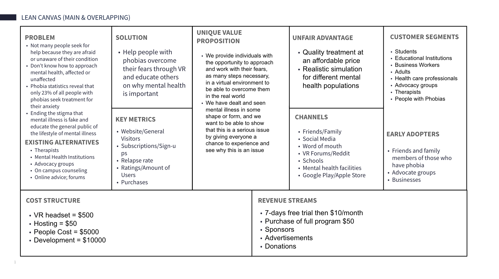
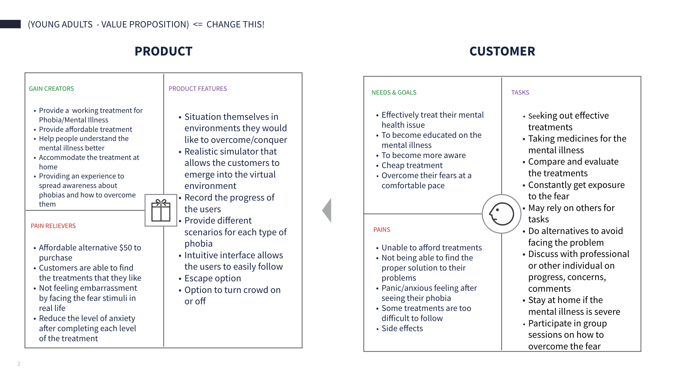
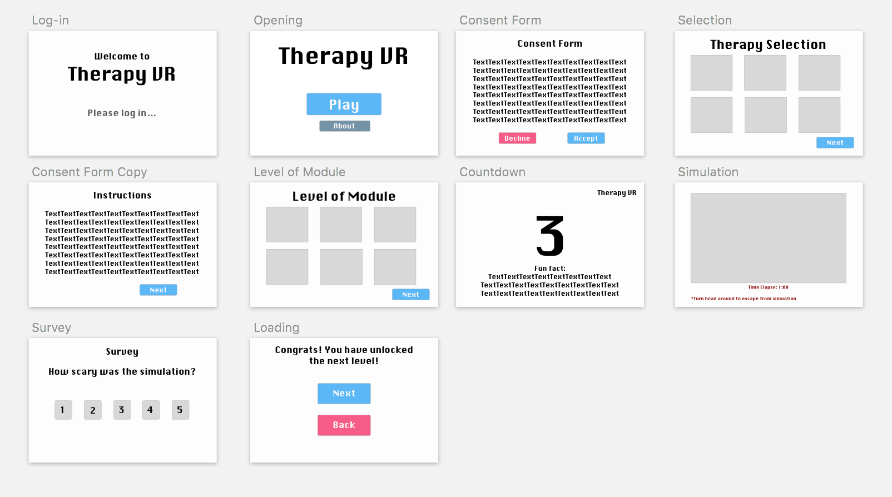

TherapyVR:
CASE STUDY
Overcome and experience phobias virtually through an effective yet simple simulation to empower yourself and spread awareness to others

The project ended on March 12, 2018. We weren't able to complete the 360° demo simulation in the 10 weeks, but you can view our simulation demo video below to understand the system we wished to build.
TherapyVR is a student class project that focused on the social issue of mental health using an ermeging technology, virtual reality. The business model of TherapyVR was B2C with an objective to help people experience and overcome phobias virtually through an effective yet simple simulation to empower themselves and spread awareness to others
10 weeks
Lean Canvas, Value Proposition Canvas, Vision Statement, User Research, Competitor-Complementor Map, Journey Map, Usability Testing
Pen, Paper, Marker, Whiteboard, Google Forms, Sketch, Bootstraps, InVision, UserTesting.com
My team and I were grouped together for the class, Informatics 134: Project in User Interface Software. Before we were put together, we indivually presented our elevator pitch on our preferred social issue, technology, role, and skills. As a group, we decided on what we want to build for a 10-weeks period.
Before tackling the project, we created a Lean Canvas to see if our product is needed in the market, focusing on problems, solutions, key metrics and competitive advantages.
After creating the Lean Canvas, we conducted research on our potential customers and value proposition. On the customer side, we defined how the customers face problems that we are trying to solve. On the product side, we focused on how we can provide solutions that match with the problems the customers face.
We created an MVP for TherapyVR, having goals for 3 weeks, 3 months, and 3 years plan.
In order to get a better understanding of mental healths and the therapy methods for them, I searched up psychological therapists in the area and asked them a few questions via email, phone, or in-person.
The followings are a sample of the questions asked:
I read and analyzed studies regarding to the processes and results for phobia, including cognitive-behavior therapy, desensitization, and medications. Through evaluating literature reviews, we discovered that therapists have used virtual reality to treat Phobias before. The goal is to expose the stimuli to the patients incrementally so they can recognize the thoughts causing the negative feelings surrounding their fears.
For the scope of the project, we decided to only focus on the software part of VR. We determined that medications (Prozac), existing virtual reality exposure therapy (Bravemind), and traditional cognitive-behavior therapy (clinic centers) to be our competitors. We identified the strengths and weaknesses of the competitors to better design our product.
As a team, we divided the group into two and assigned people to sketch the interfaces of the website and the VR simulation. We then shared our sketches and combined our best ideas into the mockups and wireframes.
I was assigned to the VR simulation team. For wireframing, I designed the simulation similar to a game in first-person perspective, using Sketch. My goal was to create a simulation that provide the different type of phobias and its levels with an objective is to reduce the patients' fears as they move up each stage.
After creating the mockups, we tested the mockup on college students who identified of having a phobia, using cognitive walkthrough and user scenarios. One feedback that we received from our participants was that the background that we used can be triggering to people who has acrophobia. As a solution, we changed thae space background to a calm shade of the color blue because from our research, we learned that the color blue is soothing, which would help patients feel relax when they start the simulation.
Before
After
The font, instructions, and background were changed to reflect user's feedback
With the user feedback, we re-designed the interfaces with the goal to help patients feel relax and have control over the experience. The followings are sample screens of the prototype.
Consent Screen
Countdown Screen

Selection Screen
Survey Screen
At the end of the 10 weeks course, the biggest lesson I learned is when building an MVP and test the prototype, the results may not be what you were looking for. Consequently, we had to pivot and find another solution to showcase our product in an appealing and effective way. As a team, we weren't able to build a full simulation in Unity, so we opted out by creating a video, allowing the users to go through the simulation automatically. For future projects, we should consider our skill sets and time constraint before creating out minimum viable product.
Click the video to watch the demo video
Click the image to open the website in a new tab

A community where IT leaders connect

An appplication for accessing and working with documents on-the-go